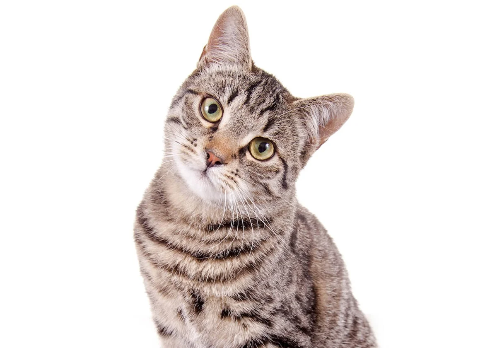

Este primer gato se me hace sumamente bonito y se parece mucho al gato que embarazó a mi gatita que locotron que loco que locotron locotron

este segundo gato me gusta también se parece a un gatito que iba a visitar mi casa de chiquito jujijujijujijuji está lindo y me cae bien

este tercer gato es el más marrón de todos y me gusta mucho porque es el más marrón de todos jujijujijujijuji está lindo y me cae bien